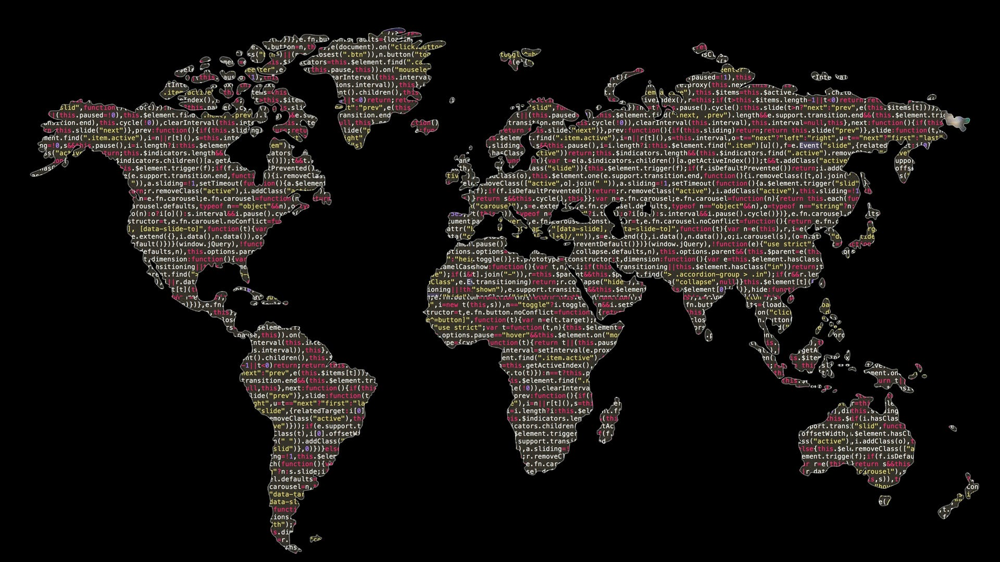

A recommendation system for anime built using the k-Nearest Neighbors algorithm. The system suggests anime based on user preferences, considering factors such as rating and genre, and employs various distance metrics like Cosine, Euclidean, and Manhattan for similarity calculations. The project includes data preprocessing techniques like imputation and feature encoding to prepare the dataset for accurate predictions.

Demonstrates the development of an end-to-end Extract, Transform, and Load (ETL) pipeline to process, clean, and analyze campaign and contact data from multiple sources. Using Python, SQL, and data visualization tools, this project integrates diverse datasets into a structured format suitable for analysis and reporting. This ETL pipeline showcases data engineering, SQL, and Python-based analysis while producing actionable insights from complex data structures.

Visualizes tornado data using JavaScript and Leaflet, leveraging heatmaps and interactive maps to display tornado locations and strengths. The map is built with data sourced from a CSV file, which includes tornado categories, damage costs, and other related information. It allows users to filter tornado data by year and visualize the intensity and distribution of tornadoes using heat layers, marker clusters, and circle overlays. The project combines data-driven visualization with user interaction to provide a clear and engaging experience for exploring tornado patterns.
Investigates diversity in the tech sector, focusing on gender and racial representation from 2014 to 2018. Using Python, Pandas, and Matplotlib, it visualizes key trends through bar charts, scatter plots, and regression analysis, providing a comprehensive look at inclusion efforts in the industry.